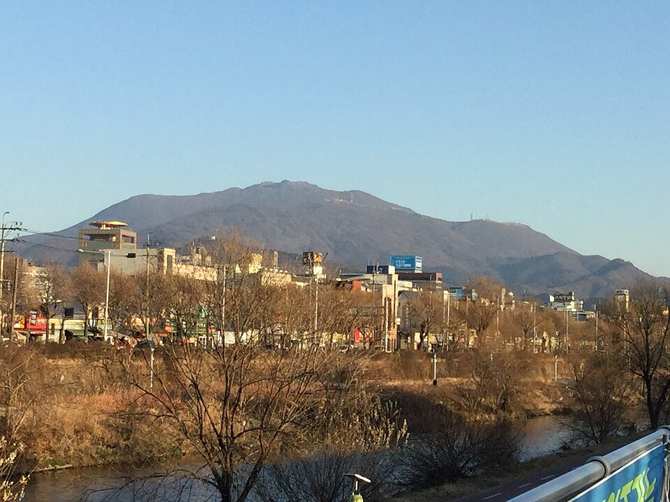

광주 동구 검정고시 — 오래 쉬었다 다시 시작할 때 하루 한 시간부터

공부에서 손을 놓은 지 이십 년, 삼십 년 된 분들이 가장 먼저 겪는 벽은 내용이 어렵다는 게 아닙니다. 책을 펴고 앉아 있는 것 자체가 안 된다는 쪽입니다. 머리가 나빠진 게 아니라 안 쓰던 근육이라 그렇습니다. 광주 동구 검정고시를 늦게 시작하시는 분들께 어떤 순서로 가면 되는지 정리했습니다.
처음부터 하루 다섯 시간을 잡지 않습니다
큰마음 먹고 시작하신 분일수록 첫 주 계획이 빡빡합니다. 그런데 몇십 년 만에 앉는 자리에서 다섯 시간은 거의 지켜지지 않고, 사흘쯤 어기고 나면 "역시 나는 안 되나 보다"로 끝납니다. 실패한 건 능력이 아니라 분량 설정입니다.
처음 2~3주는 하루 한 시간이면 충분합니다. 대신 요일을 빼먹지 않는 쪽에 목표를 두십시오. 한 시간이 몸에 붙으면 한 시간 반은 저절로 됩니다. 반대로 다섯 시간으로 시작해 무너지면 다시 앉기까지 몇 달이 걸립니다.
읽는 힘부터 되살립니다
오래 쉬신 분들은 문제를 못 푸는 게 아니라 문제 문장이 눈에 안 들어오는 경우가 많습니다. 긴 지문을 끝까지 읽으면 앞이 기억나지 않는 식입니다. 이건 국어 실력 문제가 아니라 읽기 호흡이 짧아져서 생기는 일이고, 몇 주만 연습하면 꽤 빨리 돌아옵니다.
그래서 처음에는 문제집을 많이 푸는 것보다 짧은 글 하나를 소리 내 끝까지 읽는 연습이 더 도움이 됩니다. 읽는 게 편해지면 사회·한국사처럼 글이 많은 과목이 한꺼번에 쉬워집니다.
과목은 익숙한 쪽부터 하나씩 붙입니다
처음부터 전 과목을 펼치면 어느 것도 끝나지 않습니다. 지금 그나마 낯이 익은 과목 한둘부터 시작해서 한 바퀴를 돌려 보시는 게 좋습니다. "하나는 끝까지 봤다"는 경험이 생기면 그다음 과목 속도가 달라집니다.
수학이나 영어처럼 쌓는 데 오래 걸리는 과목은 일찍 시작해 두되 분량은 아주 적게 잡습니다. 검정고시는 전 과목 평균 60점이면 합격이라, 모든 과목을 똑같이 잘할 필요가 없다는 점도 기억해 두시면 마음이 한결 가벼워집니다.
비교 대상은 남이 아니라 두 달 전의 나입니다
나이가 있으신 분들이 가장 자주 하시는 말씀이 "어린 사람들보다 느린 것 같다"입니다. 그런데 검정고시는 등수를 매기는 시험이 아니라 기준 점수를 넘으면 되는 시험입니다. 남보다 빠를 필요가 전혀 없습니다.
대신 두 달 전의 자기와는 비교해 보시길 권합니다. 그때 못 읽던 지문을 지금 읽고 있다면 그게 실력입니다. 이 확인을 혼자 하기가 어려워서, 주 1~2회라도 누군가와 점검하는 구조를 만들어 두는 게 오래 가는 데 크게 도움이 됩니다.
광주 동구에서 이렇게 함께합니다
저희는 1:1 맞춤 과외라 진도를 미리 정해 놓고 따라오게 하지 않습니다. 첫 수업에서 지금 읽는 속도와 하루 중 쓸 수 있는 시간을 확인하고, 거기서 지킬 수 있는 분량으로 시작합니다. 광주 동구의 학동·지산동·계림동·산수동·충장동·소태동·지원동 등은 방문 수업이 가능하고, 오가는 게 부담스러우시면 화상(줌) 수업으로 집에서 그대로 진행합니다.
관련 검색어: 광주동구검정고시 · 광주동구검정고시과외 · 동구검정고시과외 · 광주검정고시만학도 · 광주동구성인과외